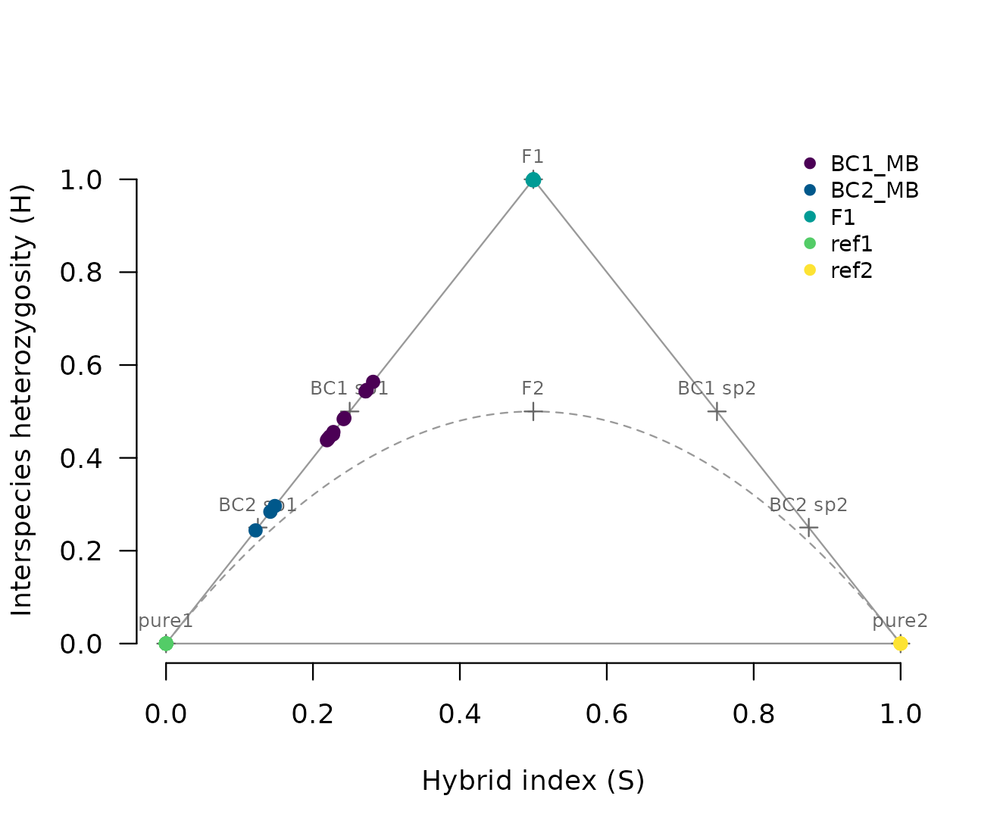

Full tutorial: dating hybrid populations in five real datasets
Source:vignettes/articles/tutorial.Rmd
tutorial.RmdThis tutorial runs hybridclock on the five example datasets that come with the package. Each one is a different situation that people studying hybrids run into: a captive cross with a known pedigree, an advanced intercross with a genetic map, a closed population founded once, a genetic rescue typed at microsatellites, and an invasive hybrid zone where only an upper bound on age is known. In every case the true age of the hybrids is known or bounded, so you can see how close the estimates come.
The settings follow the rules used to validate the package on 23 truth sets (Maier, in preparation): describe what is known about the population, and keep the ranges generous. To keep the run time down, each reference here has 2,000 simulated histories. For real analyses use 6,000 or more. The whole tutorial takes about 15 minutes on four cores; most of that is building the references.
library(hybridclock)
cores <- 41. Recent hybrids: Mexican wolves
The Mexican wolf (Canis lupus baileyi) was saved from
extinction by three captive lineages, which were kept apart for 15 to 20
years and then crossed. The wolves data hold pure wolves of
two lineages, McBride (ref1) and Ghost Ranch
(ref2), and the F1s, first backcrosses and second
backcrosses that followed, each with its class from the studbook.
First, choose diagnostic markers from the two reference groups and score every wolf. The hybrid index S is the share of alleles from species 2 (here Ghost Ranch), and the interspecies heterozygosity H is the share of markers with one allele from each.
mk <- diagnostic_markers(wolves$genotypes, wolves$groups, "ref1", "ref2")
nrow(mk)
#> [1] 486
sc <- hybrid_scores(wolves$genotypes, mk)
plot_triangle(sc, wolves$groups)
The F1s sit at the top of the triangle (S = 0.5, H = 1), and each backcross halves H and moves toward the McBride corner. With 486 markers, individual classes are easy:
cl <- classify_hybrids(sc)
table(studbook = wolves$animals$class, called = cl$class)
#> called
#> studbook BC1_species1 BC2_species1 F1 pure1 pure2
#> BC1_species1 11 0 0 0 0
#> BC2_species1 0 3 0 0 0
#> F1 0 0 5 0 0
#> pure1 0 0 0 31 0
#> pure2 0 0 0 0 6Every wolf is placed in its studbook class. To date the hybrids as a population, build a reference of simulated histories that matches the data (the number of markers, the sample size, and a genetic map given as a number of chromosomes and a range of total lengths), train the clock, and estimate:
hyb <- !wolves$groups %in% c("ref1", "ref2")
ref <- build_reference(n_sims = 2000, generations = 20, n_markers = nrow(mk),
sample_size = sum(hyb), het_dropout = c(0, 0),
map = list(chromosomes = c(38, 38), length_cM = c(1800, 2400)),
cores = cores, seed = 1)
clock <- train_clock(ref, cores = cores)
diag <- orient_genotypes(wolves$genotypes, mk)
est <- estimate_history(clock, sc[hyb, ], rep("hybrids", sum(hyb)), diag = diag[hyb, ])
est[, c("population", "n_hybrids", "method", "hybrid_age_both",
"hybrid_age_both_lower", "hybrid_age_both_upper", "information")]
#> population n_hybrids method hybrid_age_both hybrid_age_both_lower
#> 1 hybrids 19 individual classes 1.407895 1.273916
#> hybrid_age_both_upper information
#> 1 1.555964 0.928429
mean(wolves$animals$hybrid_age[hyb])
#> [1] 1.407895Every hybrid fits an early class, so the answer comes from the
individual classes (method), and it matches the true mean
age from the studbook.
2. An advanced intercross with a genetic map: chickens
The chickens data are generation F8 of an intercross
between Red Junglefowl and White Leghorn chickens, kept as a closed line
of about 100 birds. Every bird is eight generations from the pure
parents. Individual classes cannot tell an F8 from an F2:
g <- chickens$genotypes
mkc <- data.frame(column = seq_len(ncol(g)), name = colnames(g), flip = FALSE,
freq1 = 0, freq2 = 1)
scc <- hybrid_scores(g, mkc)
table(classify_hybrids(scc)$class)
#>
#> BC2_species1 F1 F2 later
#> 1 1 417 153The population clock can. Here the breeding design is documented, so
the reference uses it: F1 founders, a closed line with no sibling
mating, one breeding group and random mating. The genetic map is known,
and with a map the clock also uses ancestry switches between neighboring
markers, which multiply with every generation of recombination. A map is
never exact, so its length is stretched or shrunk by up to 25% in each
history (map_scale). Leaving that out makes the intervals
too narrow.
pos <- chickens$map[, c("chromosome", "position")]
refc <- build_reference(n_sims = 2000, generations = 50, breeders = c(30, 150),
n_markers = nrow(mkc), sample_size = 20,
founders = "F1", kinds = c(closed = 1, one = 0, both = 0),
sib_mating = c(0, 0), pools = 1, assort = c(0, 0),
het_dropout = c(0, 0), map = pos, map_scale = c(0.75, 1.25),
cores = cores, seed = 2)
clockc <- train_clock(refc, cores = cores)
#> Warning: Skipping targets that do not vary in the reference: backcrosses,
#> arriving, arrival_rate
estc <- estimate_history(clockc, scc, chickens$groups, diag = g, positions = pos,
repeats = 20)
estc[, c("population", "n", "method", "hybrid_age_both",
"hybrid_age_both_lower", "hybrid_age_both_upper")]
#> population n method hybrid_age_both hybrid_age_both_lower
#> 1 F8 572 population clock 8.711943 7.1117
#> hybrid_age_both_upper
#> 1 11.00027The true age is 8. The warning says that every simulated history here has no backcrosses and no arrivals, so those quantities are not estimated. A known map roughly halves the width of the intervals compared with a map given only as a range of lengths.
3. A single founding of a closed population: burrowing bettongs
Burrowing bettongs (Bettongia lesueur) from two subspecies were released together into a fenced reserve in 2010 and sampled every year until 2018. No new animals arrived, so the population is closed. Bettongs can breed in their first year, so the hybrids sampled k years after the release can be at most k generations old.
These genotypes have heterozygote dropout: about a quarter of
heterozygotes are called homozygous. The classifier needs to know this,
and the settings given to class_settings() are stored with
the reference, so the simulated and the real samples are classified the
same way.
mkb <- diagnostic_markers(bettongs$genotypes, bettongs$groups, "ref1", "ref2")
scb <- hybrid_scores(bettongs$genotypes, mkb)
diagb <- orient_genotypes(bettongs$genotypes, mkb)
years <- bettongs$truth$group[bettongs$truth$n >= 15 & !is.na(bettongs$truth$year)]
keep <- bettongs$groups %in% years
refb <- build_reference(n_sims = 2000, generations = 10, n_markers = nrow(mkb),
sample_size = 15, kinds = c(closed = 1, one = 0, both = 0),
het_dropout = c(0.15, 0.35),
map = list(chromosomes = c(10, 12), length_cM = c(800, 2000)),
missing = rowMeans(is.na(diagb[keep, ])),
class_settings = class_settings(het_dropout = 0.25),
cores = cores, seed = 3)
clockb <- train_clock(refb, cores = cores)
#> Warning: Skipping targets that do not vary in the reference: arriving,
#> arrival_rate
estb <- estimate_history(clockb, scb[keep, ], bettongs$groups[keep], diag = diagb[keep, ])
data.frame(estb[, c("population", "n_hybrids", "method", "hybrid_age_both",
"hybrid_age_both_lower", "hybrid_age_both_upper")],
bound = bettongs$truth$max_hybrid_age[match(estb$population, bettongs$truth$group)])
#> population n_hybrids method hybrid_age_both hybrid_age_both_lower
#> 1 Matuwa2011 3 population clock 2.156335 1.836367
#> 2 Matuwa2012 11 population clock 1.740677 1.492469
#> 3 Matuwa2013 21 population clock 2.477023 2.061469
#> 4 Matuwa2014 26 population clock 2.429422 2.016287
#> 5 Matuwa2015 14 population clock 2.301644 1.946361
#> 6 Matuwa2016 13 population clock 2.315019 1.953570
#> 7 Matuwa2017 11 population clock 1.713860 1.462589
#> 8 Matuwa2018 13 population clock 2.072783 1.742799
#> hybrid_age_both_upper bound
#> 1 2.522801 1
#> 2 2.023058 2
#> 3 2.963914 3
#> 4 2.914798 4
#> 5 2.711397 5
#> 6 2.732750 6
#> 7 2.001055 7
#> 8 2.455523 8From 2012 on, hybrid age stays at about two generations while the
time since the release grows, which fits a generation time of about
three years: the reserve had seen fewer than three generations by 2018
(bettongs$truth$generations_at_3yr). The 2011 sample has
only three hybrids, and its estimate is above the bound of one
generation. A population estimate from so few hybrids should not be
trusted.
4. Microsatellites: a genetic rescue of mountain pygmy possums
The mountain pygmy possum (Burramys parvus) population at
Mount Buller was rescued in 2011 by releasing six males from Mount
Higginbotham. The possums data hold 24 microsatellites.
Microsatellites rarely have alleles fixed between species, so S
and H are estimated by likelihood from the reference allele
frequencies, and the reference simulates alleles drawn from those
frequencies.
ms <- microsat_markers(possums$alleles, possums$groups, "ref1", "ref2")
scp <- hybrid_scores_microsat(possums$alleles, ms)
yrs <- c("Buller2012", "Buller2013", "Buller2014", "Buller2015")
keep <- possums$groups %in% yrs
refp <- build_reference(n_sims = 2000, generations = 10, sample_size = 20,
microsat = ms, het_dropout = c(0, 0), cores = cores, seed = 4)
clockp <- train_clock(refp, cores = cores)
estp <- estimate_history(clockp, scp[keep, ], possums$groups[keep])
estp[, c("population", "n_hybrids", "method", "hybrid_age_both",
"hybrid_age_both_lower", "hybrid_age_both_upper")]
#> population n_hybrids method hybrid_age_both hybrid_age_both_lower
#> 1 Buller2012 13 population clock 1.068599 1.000000
#> 2 Buller2013 32 population clock 1.416803 1.200029
#> 3 Buller2014 69 population clock 1.877041 1.407572
#> 4 Buller2015 110 population clock 2.564040 1.783608
#> hybrid_age_both_upper
#> 1 1.181727
#> 2 1.722884
#> 3 2.634588
#> 4 3.918200
possums$truth[possums$truth$group %in% yrs, c("group", "hybrid_age")]
#> group hybrid_age
#> 4 Buller2012 1.0
#> 5 Buller2013 1.5
#> 6 Buller2014 NA
#> 7 Buller2015 NAThe 2012 hybrids are all F1s (age 1), and those of 2013 are F1s, F2s and backcrosses (about 1.5). In 2014 and 2015 only upper bounds are known: 3 and 4 generations.
5. An invasive hybrid zone with generic settings: Asian carp
Bighead and silver carp were imported from China in 1973, were in the
open waters of the Mississippi River basin by the early 1980s, and have
hybridized there since. The carp data hold three river
sites sampled in 2009 to 2011. Only an upper bound on hybrid age is
known: about 12 generations, from the time since the imports and a
generation time of at least three years. Little is known about the
breeding population, so the reference uses the package defaults: up to
50 generations, 10 to 500 breeders, any founding share, and arrivals of
either species allowed. The map is given as the carp karyotype (24
chromosomes) and a broad range of lengths.
mkk <- diagnostic_markers(carp$genotypes, carp$groups, "ref1", "ref2")
sck <- hybrid_scores(carp$genotypes, mkk)
diagk <- orient_genotypes(carp$genotypes, mkk)
sites <- c("IMAR", "PL26", "MKY")
keep <- carp$groups %in% sites
refk <- build_reference(n_sims = 2000, n_markers = nrow(mkk), sample_size = 20,
het_dropout = c(0, 0),
map = list(chromosomes = c(24, 24), length_cM = c(1500, 3500)),
cores = cores, seed = 5)
clockk <- train_clock(refk, cores = cores)
estk <- estimate_history(clockk, sck[keep, ], carp$groups[keep], diag = diagk[keep, ],
repeats = 20)
estk[, c("population", "n_hybrids", "method", "hybrid_age_both",
"hybrid_age_both_lower", "hybrid_age_both_upper", "arriving", "information")]
#> population n_hybrids method hybrid_age_both hybrid_age_both_lower
#> 1 IMAR 206 population clock 3.134852 1.834490
#> 2 MKY 37 population clock 6.526956 2.536263
#> 3 PL26 75 population clock 3.379175 1.771063
#> hybrid_age_both_upper arriving information
#> 1 5.695512 0.6617952 0.6257939
#> 2 18.714472 0.3418712 0.3398514
#> 3 6.941874 0.5541791 0.5488066All three sites are below the bound of 12 generations. The lower
Mississippi site (MKY) has the fewest hybrids and the
widest interval, and its lower information value says that
much of its answer reflects the reference’s range. The probability that
pure fish are still arriving is between about one third and two thirds;
F1s born as late as 2006 show that hybridization was still going on.
Reading the answer
Each row of estimate_history() is one population. The
columns to read first are:
-
method:"individual classes"when the answer comes from the classes (samples made up of F1s and backcrosses, where the reference shows the classes to be more accurate),"population clock"otherwise. -
hybrid_age_bothwith_lowerand_upper: the hybrid age and its 90% interval. Hybrid age is the number of generations back to the nearest pure ancestor, averaged over the lines of each hybrid’s pedigree and then over the hybrids. -
hybrid_age_rareandbackcrosses: how long ago the rarer species’ genes entered, and how many matings with pure animals there have been since the first cross. -
arriving: the probability that pure animals of the rarer species are still arriving. When they are, hybrid age levels off, and it is then a lower bound on the time since contact. -
information: near 1 when the interval is much narrower than the range of the reference, near 0 when the answer mostly reflects the settings. Low values usually mean few or weak markers.
Using your own data
The same steps apply to any pair of species or lineages:
- Choose diagnostic markers with
diagnostic_markers()from pure reference samples, ormicrosat_markers()for microsatellites. For SNPs that are not fixed, give the reference allele frequencies tobuild_reference()(freq); see the vignette. - Check that the markers are diagnostic in the animals that actually
bred, with
check_markers(), if your sample has F1s. - Build a reference that describes what you know, with generous
ranges: the founders (
founders), whether the population is closed (kinds), a ceiling on the number of generations from the earliest possible date of contact (generations), the breeding size (breeders), and the map. - Train the clock and estimate, and read the
informationcolumn.
markers_needed() helps plan a study: dating F2 families
within half a generation took about 50 diagnostic markers in
simulations, and older populations need more.
Citation
If you use hybridclock, please cite both:
- Maier PA, Mabe JA, Hale JL, Herman AE, Kantz BP (2024) Hybridization between Anaxyrus boreas × canorus within Eldorado National Forest: the first genomic assessment. Final report to the US Forest Service.
- Maier PA (2026) hybridclock: Dating hybrid populations beyond F2, with or without a genetic map. Manuscript in preparation.
Run citation("hybridclock") for the entries.
The example data come from Fitak et al. (2018, Journal of Heredity), Johnsson et al. (2016, Genetics), Rick et al. (2019, Genes), Weeks et al. (2017, Nature Communications) and Lamer et al. (2015, Molecular Ecology); see the help page of each dataset for the full references and licences.